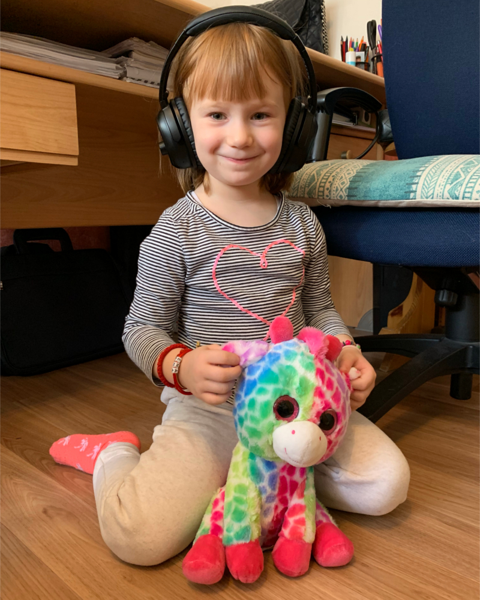
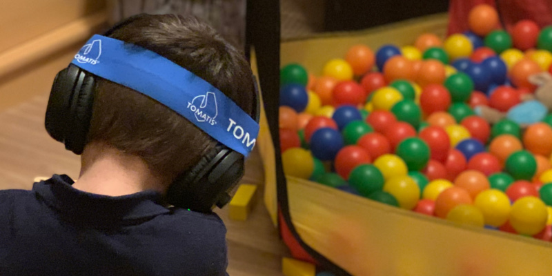
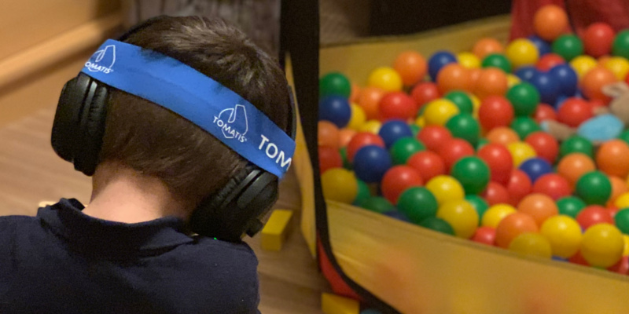
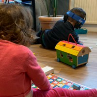
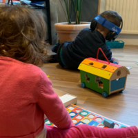

Als Facharzt für Hals-, Nasen-, und Ohrenheilkunde in Paris erforschte Dr Alfred Tomatis.
die Zusammenhänge zwischen Hören und Sprechen, sowie den wechselseitigen
Einfluss von Gehör und psychischem Befinden.

Er ist Begründer der Audio-Psycho-Phonologie, der Lehre der Beziehung zwischen Ohr, Psyche und Sprache.
Alfred Tomatis gilt als Wegbereiter der Musik- und Klangtherapie, moderner Sprech- und Gesangspädagogik und Entdecker pränataler Klangerfahrung.
Aufgrund seiner medizinischen Forschungsarbeit hat er das Tomatis® Hör-und Wahrnehmungstraining begründet und entwickelt.
Das Prinzip des von Prof. Alfred Tomatis entwickelten Hör- und Wahrnehmungstrainings
besteht darin, durch das Hören von speziell aufbereitetem Klangmaterial (Musik oder Stimme)
Fokussierung und Aufmerksamkeit zu trainieren. Nicht vorhersehbare Klangkontraste rufen
Überraschungseffekte hervor, die im Gehirn für Wachheit und neue Organisation alter
Verhaltensmuster sorgen. Die Methode trainiert die Muskulatur im Mittelohr,
fördert die Funktion des Gleichgewichtsorgans und verbessert die Hörverarbeitung im
Gehirn. Das „Zuhören“ und „Hinhören“ werden intensiviert.
Das Tomatis® Hör-und Wahrnehmungstraining dient nicht nur der Verbesserung der Hörverarbeitung, sondern stimuliert und aktiviert alle Sinnessysteme. Damit können gezielte
Veränderungen in der Körpermotorik, Körperwahrnehmung, Sprache, Kommunikation, Konzentration
und emotionalen Entwicklung dauerhaft erreicht werden. Ein Tomatis® Hör- und
Wahrnehmungstraining eignet sich für Menschen aller Altersgruppen von der Geburt bis
ins hohe Alter und auch zur Begleitung in der Schwangerschaft.


 

 
